Comparison of confidence intervals in high dimensions
Jean Morrison
December 28, 2016
Last updated: 2018-04-25
workflowr checks: (Click a bullet for more information)-
✔ R Markdown file: up-to-date
Great! Since the R Markdown file has been committed to the Git repository, you know the exact version of the code that produced these results.
-
✔ Environment: empty
Great job! The global environment was empty. Objects defined in the global environment can affect the analysis in your R Markdown file in unknown ways. For reproduciblity it’s best to always run the code in an empty environment.
-
✔ Seed:
set.seed(20180425)The command
set.seed(20180425)was run prior to running the code in the R Markdown file. Setting a seed ensures that any results that rely on randomness, e.g. subsampling or permutations, are reproducible. -
✔ Session information: recorded
Great job! Recording the operating system, R version, and package versions is critical for reproducibility.
-
Great! You are using Git for version control. Tracking code development and connecting the code version to the results is critical for reproducibility. The version displayed above was the version of the Git repository at the time these results were generated.✔ Repository version: c33de43
Note that you need to be careful to ensure that all relevant files for the analysis have been committed to Git prior to generating the results (you can usewflow_publishorwflow_git_commit). workflowr only checks the R Markdown file, but you know if there are other scripts or data files that it depends on. Below is the status of the Git repository when the results were generated:
Note that any generated files, e.g. HTML, png, CSS, etc., are not included in this status report because it is ok for generated content to have uncommitted changes.Ignored files: Ignored: .Rhistory Ignored: .Rproj.user/ Ignored: docs/figure/ Untracked files: Untracked: .Rbuildignore Untracked: R/get_fcr.R Untracked: analysis/biomarker_sims.rmd Untracked: analysis/ci_bib.bib Untracked: analysis/compare_cis_cache/ Untracked: analysis/compare_cis_temp.Rmd Untracked: analysis/compare_cis_temp_cache/ Untracked: analysis/linreg_sims.rmd Untracked: data/sim.list.new.rda Untracked: walkthroughs/biomarker_sims_cache/ Untracked: walkthroughs/biomarker_sims_files/ Untracked: walkthroughs/ci_bib_small.bib Untracked: walkthroughs/compare_cis_cache/ Untracked: walkthroughs/compare_cis_files/ Untracked: walkthroughs/linreg_sims_cache/ Untracked: walkthroughs/linreg_sims_files/ Unstaged changes: Modified: NAMESPACE Modified: walkthroughs/ci_bib.bib Modified: walkthroughs/compare_cis.rmd
Expand here to see past versions:
| File | Version | Author | Date | Message |
|---|---|---|---|---|
| rmd | c33de43 | Jean Morrison | 2018-04-25 | wflow_publish(c(“analysis/compare_cis.rmd”, “analysis/index.Rmd”)) |
In this document we will compare several different approaches to building confidence intervals in high dimensions using the example in Section 1.5 of “Rank conditional coverage and confidence intervals in high dimensional problems” by Jean Morrison and Noah Simon.
We will start by setting up the problem and generating data. Then we will run each method one at a time for a single scenario. At the end, you will find the code that generates the results shown in the paper exactly.
Generate data
For this exploration we will use setting 2 from section 1.5. We have 1000 parameters generated from a \(N(0, 1)\) distribution. Each of our observed statistics \(Z_i\) is generated as \[Z_i \sim N(\theta_i, 1).\] We will rank these statistics based on their absolute value.
library(ggplot2)
library(rcc)
library(rccSims)
set.seed(1e7)
theta <- rnorm(1000)
Z <- rnorm(n=1000, mean=theta)
j <- order(abs(Z), decreasing=TRUE)
rank <- match(1:1000, j)Naive confidence intervals
We construct standard marginal confidence intervals for the parameters associated with each of these estimates. We will use \(\alpha=0.1\) to give an expected rate of coverage of 90%.
ci.naive <- cbind(Z - qnorm(0.95), Z + qnorm(0.95))
#Average coverage
sum(ci.naive[,1] <= theta & ci.naive[,2] >= theta)/1000[1] 0.894We can plot these intervals and color them by whether or not they cover their target parameter. Notice that even though the overall coverage rate is close to the nominal level, a lot of the non-covering intervals are constructed for the most extreme statistics.
rccSims::plot_cis(rank, ci.naive, theta) + ggtitle("Standard Marginal Intervals")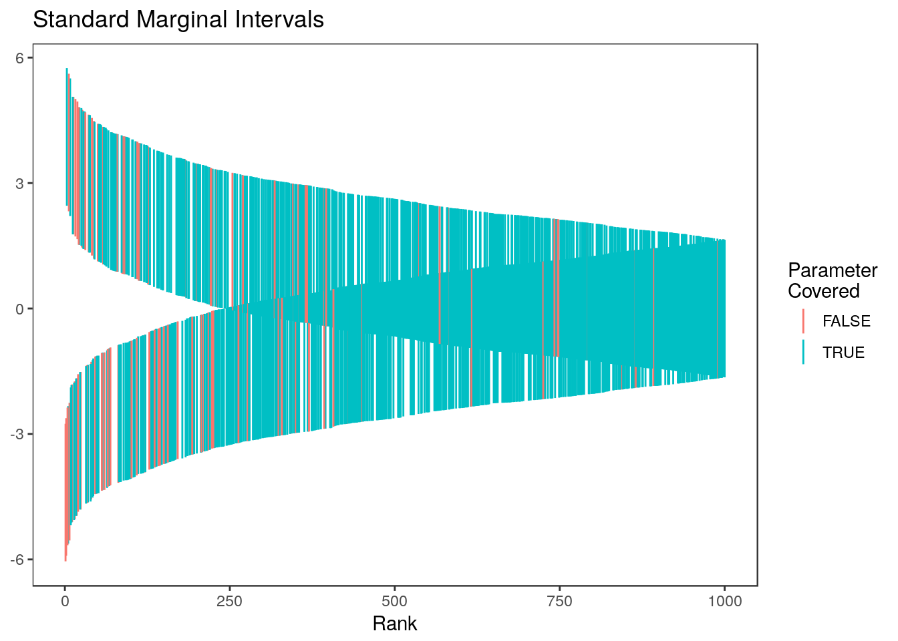
Here is the same plot for only the top 20% of statistics. In this plot, points show the value of the true parameter. 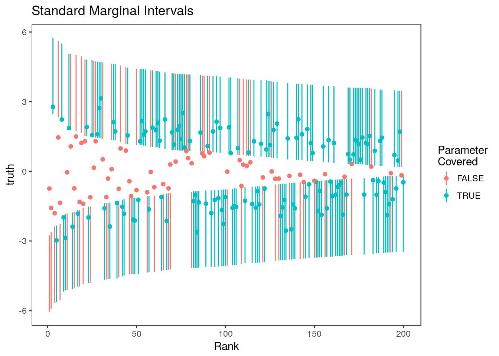
This is just one data set. To see what the expected coverage rates at each rank are we’ll simulate 100 more data sets:
z_many <- replicate(n=100, expr={rnorm(n=1000, mean=theta)})
naive.coverage <- apply(z_many, MARGIN=2, FUN=function(zz){
j <- order(abs(zz), decreasing=TRUE)
ci <- cbind(zz - qnorm(0.975), zz + qnorm(0.975))
covered <- (ci[,1] <= theta & ci[,2] >= theta)[j]
return(covered)
})Plotting the average coverage at each rank: 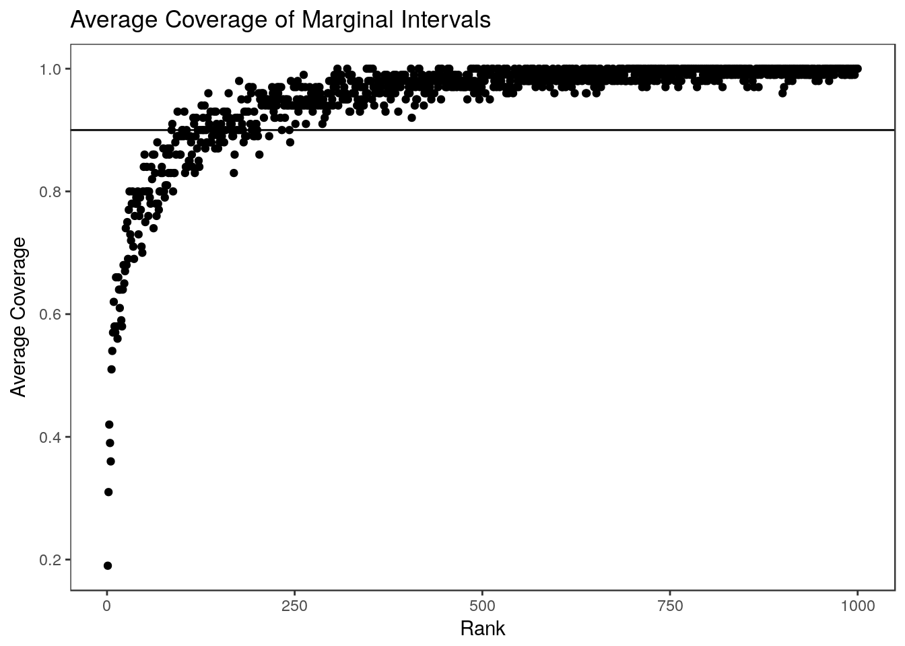
Selection adjusted confidence intervals
Now lets look at the intervals from the selection adjusted methods proposed by Benjamini and Yekutieli (2005), Weinstein, Fithian, and Benjamini (2013), and Reid, Taylor, and Tibshirani (2014). These approaches all require us to make a selection before constructing intervals and we will get different intervals if we select a different subset of estimates. For this exploration, we select the top ten percent of estimates based on the absolute value ranking.
Benjamini and Yekutieli (2005) Intervals
Using this selection rule, the Benjamini and Yekutieli (2005) intervals are equivalent to the \(1-\frac{100*0.1}{1000} = 0.99\) coverage marginal intervals:
Z.sel <- Z[rank <= 100]
theta.sel <- theta[rank <= 100]
ci.by <- cbind(Z.sel - qnorm(0.995) , Z.sel + qnorm(0.995))
sum(ci.by[,1] <= theta.sel & ci.by[,2] >= theta.sel)/100[1] 0.89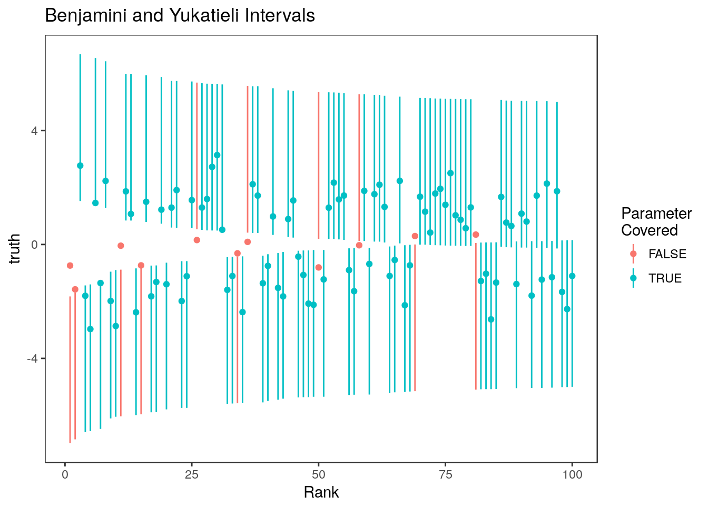
Now averaging coverage of the BY intervals over 100 data sets:
system.time(by.coverage <- apply(z_many, MARGIN=2, FUN=function(zz){
j <- order(abs(zz), decreasing=TRUE)
ci <- cbind(zz[j][1:100] - qnorm(0.995), zz[j][1:100] + qnorm(0.995))
covered <- (ci[,1] <= theta[j][1:100] & ci[,2] >= theta[j][1:100])
return(covered)
})) user system elapsed
0.018 0.000 0.017 #The average coverage in each simulation is close to the nominal level
summary(colMeans(by.coverage)) Min. 1st Qu. Median Mean 3rd Qu. Max.
0.8600 0.9100 0.9300 0.9282 0.9500 0.9800 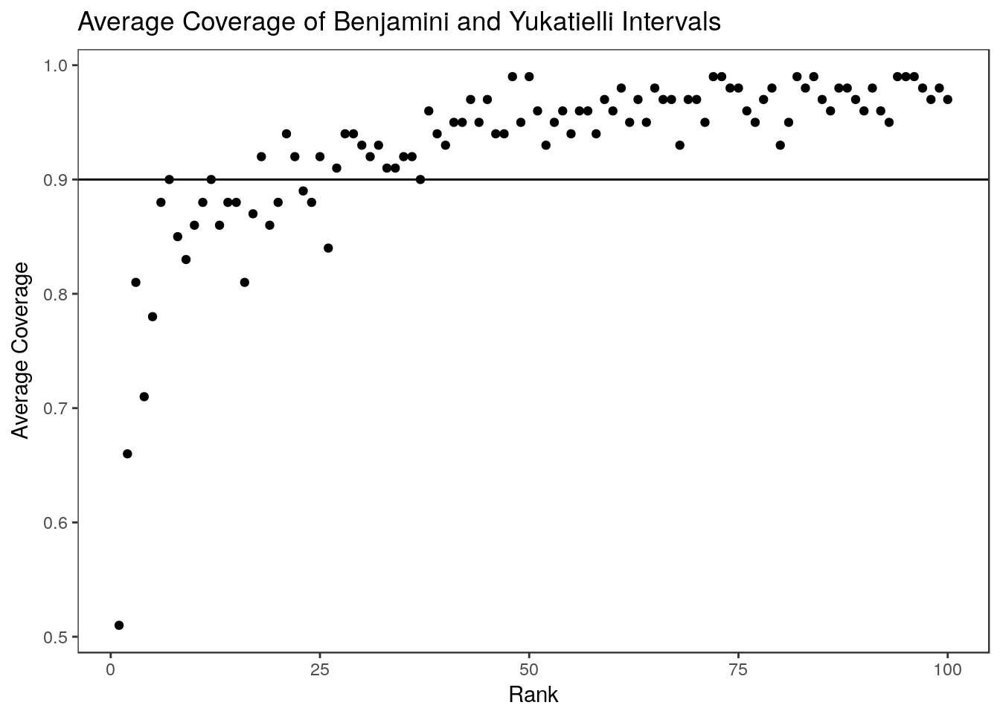
These intervals have reduced coverage for the top ranked estimates even though the average coverage in the selected set is correct.
Weinstein, Fithian, and Benjamini (2013) Intervals
For the Weinstein, Fithian, and Benjamini (2013) intervals, we use code that accompanied that paper. This code is included in the rccSims package for convenience. The Shortest.CI function used below is part of this code. These intervals are asymetric and narrower than the Benjamini and Yekutieli (2005) intervals but still control the average coverage in the selected set.
#We need to give this method the "cutpoint" or minimum value of Z
ct <- abs(Z[rank==101])
wfb <- lapply(Z, FUN=function(x){
if(abs(x) < ct) return(c(NA, NA))
ci <- try(rccSims:::Shortest.CI(x, ct=ct, alpha=0.1), silent=TRUE)
if(class(ci) == "try-error") return(c(NA, NA)) #Sometimes WFB code produces errors
return(ci)
})
ci.wfb <- matrix(unlist(wfb), byrow=TRUE, nrow=1000)[rank <= 100,]
sum(ci.wfb[,1] <= theta[rank <=100] & ci.wfb[,2]>= theta[rank<=100])/100[1] 0.93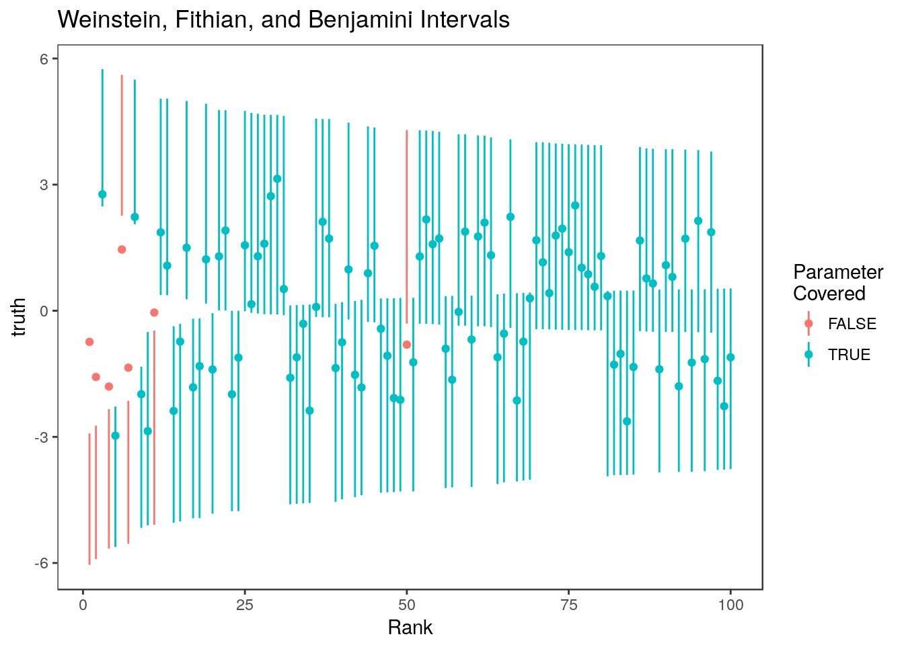
Most of the non-covering intervals are still for the parameters with the most significnt estimates. This pattern is clear when we look at the average coverage over 100 data sets:
system.time(wfb.coverage <- apply(z_many, MARGIN=2, FUN=function(zz){
j <- order(abs(zz), decreasing=TRUE)
ct <- abs(zz[j][101])
wfb <- lapply(zz[j][1:100], FUN=function(x){
if(abs(x) < ct) return(c(NA, NA))
ci <- try(rccSims:::Shortest.CI(x, ct=ct, alpha=0.1), silent=TRUE)
if(class(ci) == "try-error") return(c(NA, NA)) #Sometimes WFB code produces errors
return(ci)
})
ci <- matrix(unlist(wfb), byrow=TRUE, nrow=100)
covered <- (ci[,1] <= theta[j][1:100] & ci[,2] >= theta[j][1:100])
return(covered)
})) user system elapsed
4.319 0.008 4.330 #The average coverage in each simulation is close to the nominal level
summary(colMeans(wfb.coverage)) Min. 1st Qu. Median Mean 3rd Qu. Max.
0.8400 0.8900 0.9100 0.9053 0.9200 0.9600 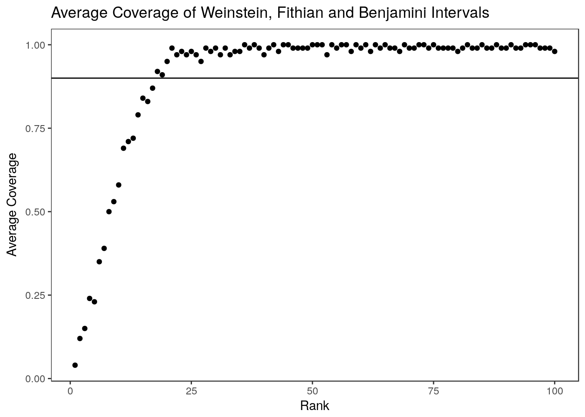
Reid, Taylor, and Tibshirani (2014) Intervals
Finally, lets look at the intervals of Reid, Taylor, and Tibshirani (2014). These are implemented in the selectiveInference R package
library(selectiveInference)
M <- manyMeans(y=Z, k=100, alpha=0.1, sigma=1)
ci.rtt <- matrix(nrow=1000, ncol=2)
ci.rtt[M$selected.set, ] <- M$ci
ci.rtt <- ci.rtt[rank <= 100,]
sum(ci.rtt[,1] <= theta[rank <=100] & ci.rtt[,2]>= theta[rank<=100])/100[1] 0.88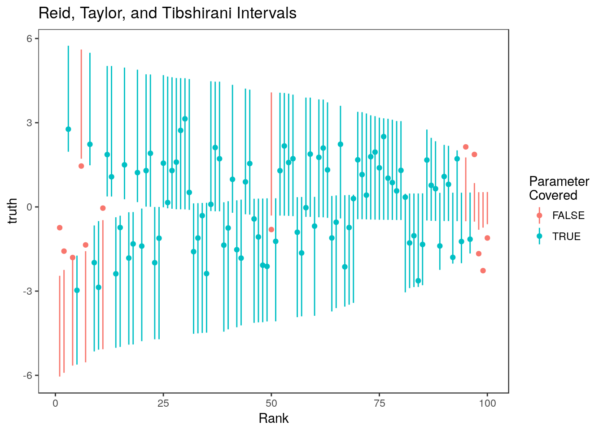
For the most part, these intervals are narrower than the Weinstein, Fithian, and Benjamini (2013) intervals. Non-covering intervals tend to be concentrated at the two extremes – parameters associated with the most and least significant estimates tend to go uncovered. We can see this by looking at the average over 100 simulations:
system.time(rtt.coverage <- apply(z_many, MARGIN=2, FUN=function(zz){
j <- order(abs(zz), decreasing=TRUE)
M <- manyMeans(y=zz, k=100, alpha=0.1, sigma=1)
ci <- matrix(nrow=1000, ncol=2)
ci[M$selected.set, ] <- M$ci
ci <- ci[j,][1:100,]
covered <- (ci[,1] <= theta[j][1:100] & ci[,2] >= theta[j][1:100])
return(covered)
})) user system elapsed
7.990 0.000 7.991 #The average coverage in each simulation is close to the nominal level
summary(colMeans(rtt.coverage)) Min. 1st Qu. Median Mean 3rd Qu. Max.
0.8400 0.8800 0.9000 0.9017 0.9225 0.9600 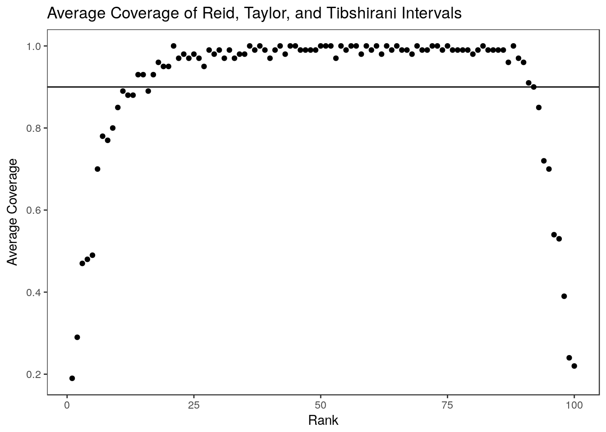
Parametric Bootstrap
Now we will construct intervals for the same problem using the parametric bootstrap described in Section 2.3. Since we are ranking based on absolute value, we will use the variation given in Supplementary Algorithm 2. The procedure is implemented in the par_bs_ci function in the rcc package but here we go through the steps explicitly. First we estimate the average bias at each rank by bootstrapping:
set.seed(13421)
B <- replicate(n = 500, expr = {
w <- rnorm(n=1000, mean=Z, sd=1)
k <- order(abs(w), decreasing=TRUE)
sign(w[k])*(w[k]-Z[k])
})
dim(B)[1] 1000 500Next we calculate the 0.05 and 0.95 quantiles of the bias for each rank.
qs <- apply(B, MARGIN=1, FUN=function(x){quantile(x, probs=c(0.05, 0.95))})Finally, we construct the intervals by pivoting
ci.boot <- cbind(Z[j]-qs[2,], Z[j]-qs[1,])
which.neg <- which(Z[j] < 0)
ci.boot[ which.neg , ] <- cbind(Z[j][which.neg] + qs[1,which.neg], Z[j][which.neg]+qs[2,which.neg])
#Get CI's in the same order as estimates
ci.boot <- ci.boot[rank,]
sum(ci.boot[,1] <= theta & ci.boot[,2] >= theta)/1000[1] 0.941For comparison, here is how to get the same intervals using the rcc package.
set.seed(13421)
ci.boot2 <- rcc::par_bs_ci(beta=Z, n.rep=500)
head(ci.boot2) beta se rank ci.lower ci.upper debiased.est
1 0.90690069 1 527 -0.8494054 1.9118492 0.5630546
2 0.02609555 1 989 -1.4182257 1.5079924 0.0142163
3 -1.05117530 1 455 -1.9420156 0.8520663 -0.6277091
4 -1.79176154 1 208 -2.5073640 0.2531810 -1.0707158
5 -0.42610396 1 780 -1.6345952 1.1359413 -0.2044789
6 0.51937390 1 729 -0.8277951 1.6480942 0.4228082all.equal(ci.boot2$ci.lower, ci.boot[,1])[1] TRUEall.equal(ci.boot2$ci.upper, ci.boot[,2])[1] TRUEHere are the parametric bootstrap intervals for all ranks: 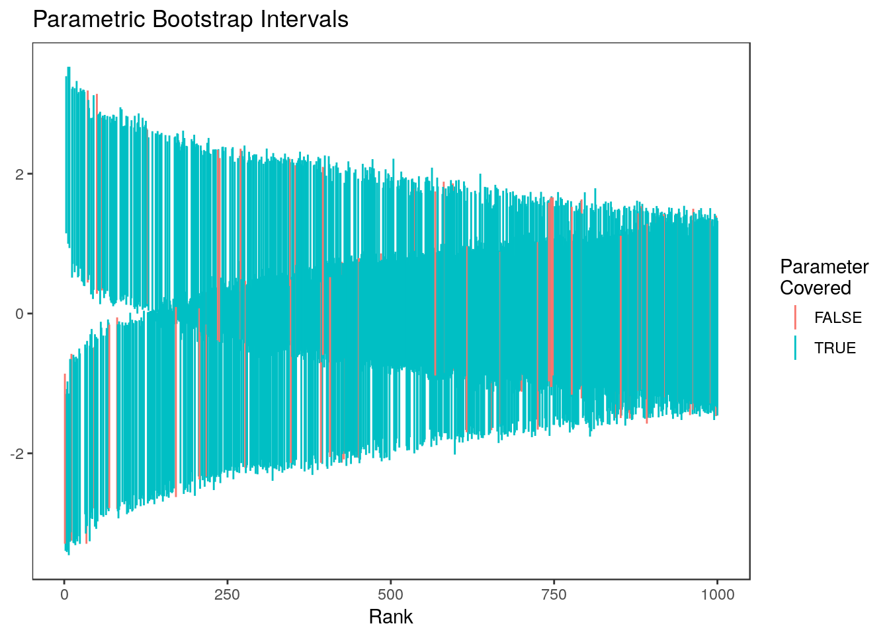 and for just the top 20% of ranks 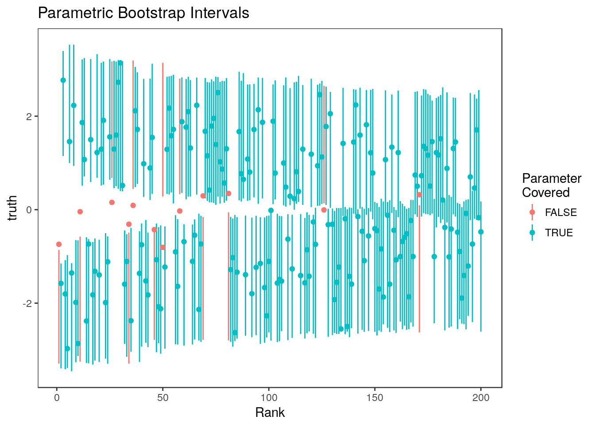
Looking at the average coverage over 100 data sets we see that the parametric bootstrap intervals are slightly conservative but that the average coverage for each rank is close to the nominal level.
system.time(boot.coverage <- apply(z_many, MARGIN=2, FUN=function(zz){
ci <- rcc::par_bs_ci(beta=zz)[, c("ci.lower", "ci.upper")]
covered <- (ci[,1] <= theta & ci[,2] >= theta)
return(covered)
})) user system elapsed
34.948 0.196 35.146 summary(colMeans(boot.coverage)) Min. 1st Qu. Median Mean 3rd Qu. Max.
0.9180 0.9330 0.9370 0.9377 0.9440 0.9540 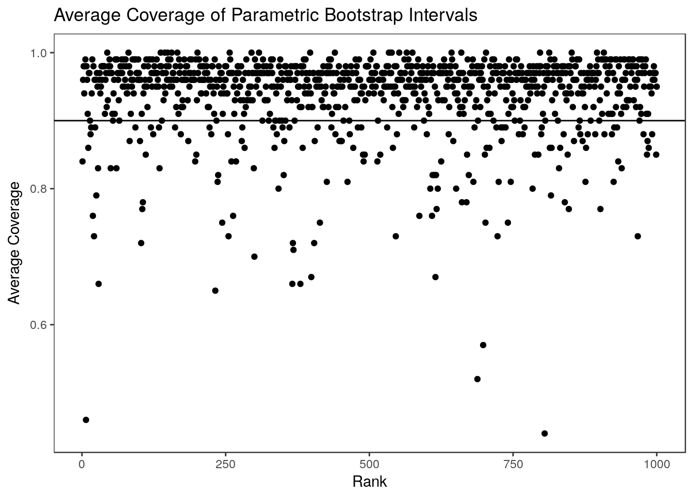
The difference between the observed average coverage at each rank and the nominal level is a result of using \(Z_i\) as an estimate for \(\theta_i\) in the bootstrapping step. If we knew \(\theta_i\) we could generate the oracle bootstrap intervals which achieve exactly the right coverage at each rank (and are much smaller):
oracle.coverage <- apply(z_many, MARGIN=2, FUN=function(zz){
ci <- rcc::par_bs_ci(beta=zz, theta=theta)[, c("ci.lower", "ci.upper")]
covered <- (ci[,1] <= theta & ci[,2] >= theta)
return(covered)
})
summary(colMeans(oracle.coverage)) Min. 1st Qu. Median Mean 3rd Qu. Max.
0.8780 0.8918 0.8990 0.8981 0.9040 0.9170 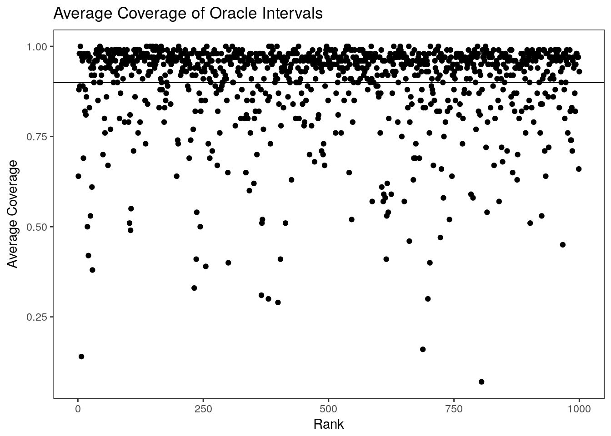
Empirical Bayes Credible Intervals
There are also empirical Bayes (EB) proposals for estimating praameters in high dimensional settings. Here we will look at the credible intervals generated using the method of Stephens (2016), which is implemented in the ashr package. This method assumes that \(\theta_i\) are drawn from a unimodal distribution and that \(Z_i \sim N(\theta_i, \sigma_i)\) where \(\sigma_i\) is known. These assumptions both hold in this case so ashr does well. Unlike the selection adjusted methods, ashr also has an RCC close to the nominal level at every rank.
library(ashr)
ash.res <- ash(betahat = Z, sebetahat = rep(1, 1000), mixcompdist = "normal")
ci.ash <- ashci(ash.res, level=0.9, betaindex = 1:1000, trace=FALSE)
sum(ci.ash[,1]<= theta & ci.ash[,2] >= theta)/1000[1] 0.877Here are the ashr intervals at all ranks 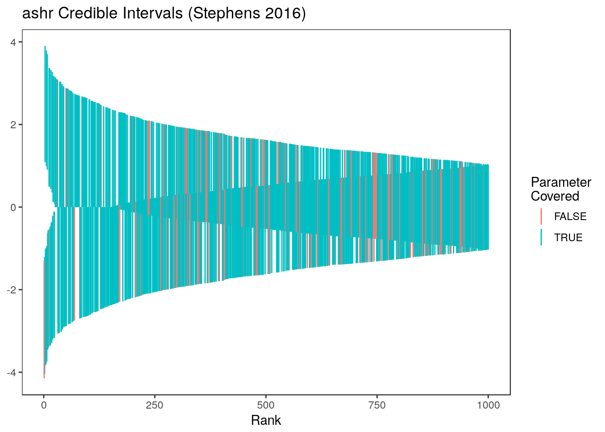 and for just the parameters with estimates in the top 20% 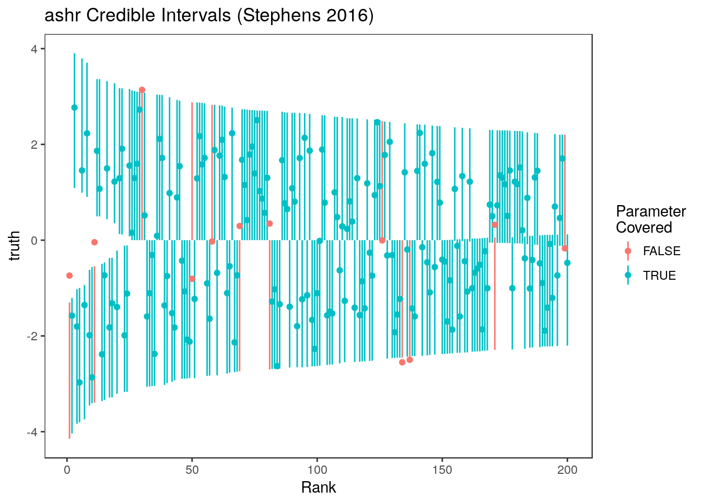
We can look at the average coverage of the ashr credible intervals over 100 simulations. It is worth noting that we have conducted the simulations from more of a frequentist point of view — the parameters were fixed at the beginning and in each simulation we simply generate new statistics. From a Bayesian perspective, it would be more appropriate to generate a new parameter vector from the prior each time. This might explain why we get overall slight undercoverage from the ashr intervals in this setting. ashr also takes substantially longer to run than the parametric bootstrap (on a normal laptop, the code below took nearly 7 minutes while the parametric bootstrap took only 30 seconds.) In this example, ashr does a good job controlling the RCC for the top parameters. This is, in part, because the true parameters are sparse. We found in the paper that when the parameters are not sparse, performance is much worse.
system.time(ash.coverage <- apply(z_many, MARGIN=2, FUN=function(zz){
j <- order(abs(zz), decreasing = TRUE)
ash.res <- ash(betahat = zz, sebetahat = rep(1, 1000), mixcompdist = "normal")
ci <- ashci(ash.res, level=0.9, betaindex = 1:1000, trace=FALSE)
covered <- (ci[,1] <= theta & ci[,2] >= theta)[j]
return(covered)
})) user system elapsed
404.218 1.424 405.705 summary(colMeans(ash.coverage)) Min. 1st Qu. Median Mean 3rd Qu. Max.
0.8220 0.8592 0.8740 0.8712 0.8840 0.9120 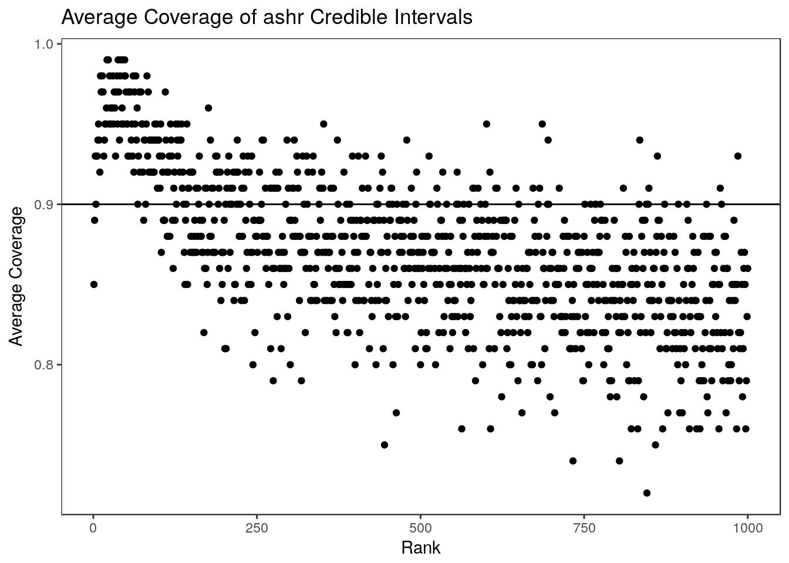
Generating simulation results in the paper
All of the interval construction methods described in the previous section (except for the Benjamini and Yekutieli (2005) intervals) are included in the example_sim function in the rccSims package. In Section 1.5, we look at four sets of true parameters:
- All the parameters are equal to zero
- All the parameters were genreated from a \(N(0, 1)\) distribution
- 900 of the parameters are equal to 0 and 100 are equal to 3
- 900 of the parameters are equal to 0 and 100 are drawn from a \(N(0, 1)\) distribution
First we generate the four vectors of parameters
example_params <- cbind(rep(0, 1000),
rnorm(n=1000),
rep(c(0, 3), c(900, 100)),
c(rep(0, 900), rnorm(100)))
titles <- c("All Zero", "All N(0, 1)", "100 Effects=3", "100 Effects N(0, 1)")This matrix is also included as a builtin data set in the rccSims package. We generate simulation results using the example_sim function. This function just repeatedly executes the steps in the previous sections and records the coverage and width of the intervals.
set.seed(6587900)
sim.list <- list()
for(i in 1:4){
sim.list[[i]] <- example_sim(example_params[,i], n=100, use.abs=TRUE)
}These results are included as a built-in data set to the rccSims package. The plot_coverage and plot_width functions in the rccSims package create plots of the results.
data("sim.list", package="rccSims")
covplots <- list()
widthplots <- list()
titles <- c("All Zero", "All N(0, 1)", "100 Effects=3", "100 Effects N(0, 1)")
for(i in 1:4){
lp <- "none"
covplots[[i]] <- plot_coverage(sim.list[[i]], proportion=0.2,
cols=c("black", "deeppink3", "blue", "gold4", "forestgreen", "purple"),
simnames=c("naive", "par", "oracle", "ash", "wfb", "selInf1"),
ltys= c(2, 1, 3, 6, 4, 2), span=0.5, main=titles[i], y.range=c(-0.02, 1.02),
legend.position = lp) + theme(plot.title=element_text(hjust=0.5))
widthplots[[i]] <- plot_width(sim.list[[i]], proportion=0.2,
cols=c("black", "deeppink3", "blue", "gold4", "forestgreen", "purple"),
simnames=c("naive", "par", "oracle", "ash", "wfb", "selInf1"),
ltys= c(2, 1, 3, 6, 4, 2), span=0.5, main=titles[i],
legend.position = lp)+ theme(plot.title=element_text(hjust=0.5))
}
legend <- rccSims:::make_sim_legend(legend.names = c("Marginal", "Parametric\nBootstrap",
"Oracle", "ash", "WFB", "RTT"),
cols=c("black", "deeppink3", "blue", "gold4", "forestgreen", "purple"),
ltys= c(2, 1, 3, 6, 4, 2))covplots[[1]]Warning: Removed 200 rows containing non-finite values (stat_smooth).Warning: Removed 4 rows containing missing values (geom_path).widthplots[[1]]Warning: Removed 200 rows containing missing values (geom_path).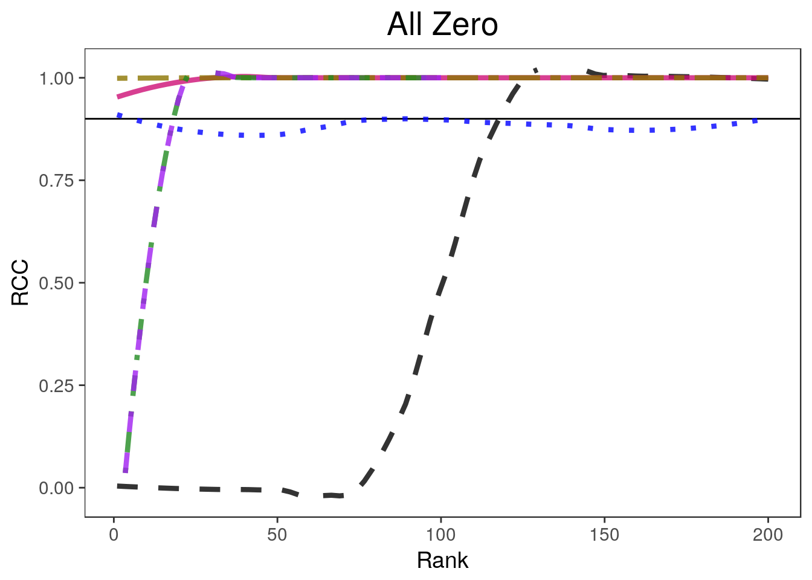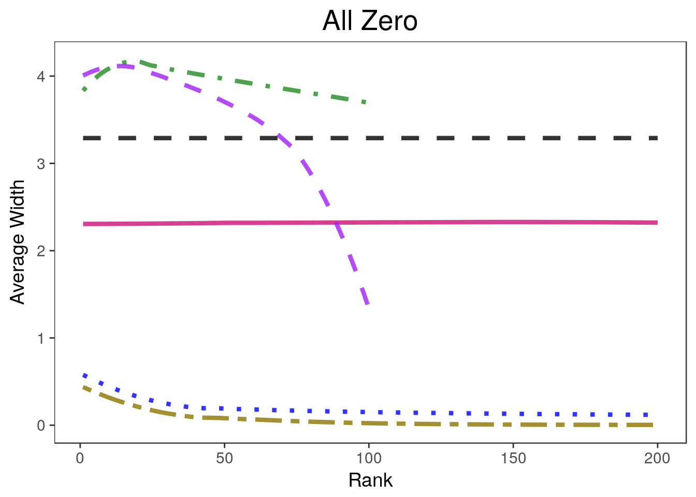
covplots[[2]]Warning: Removed 201 rows containing non-finite values (stat_smooth).widthplots[[2]]Warning: Removed 201 rows containing missing values (geom_path).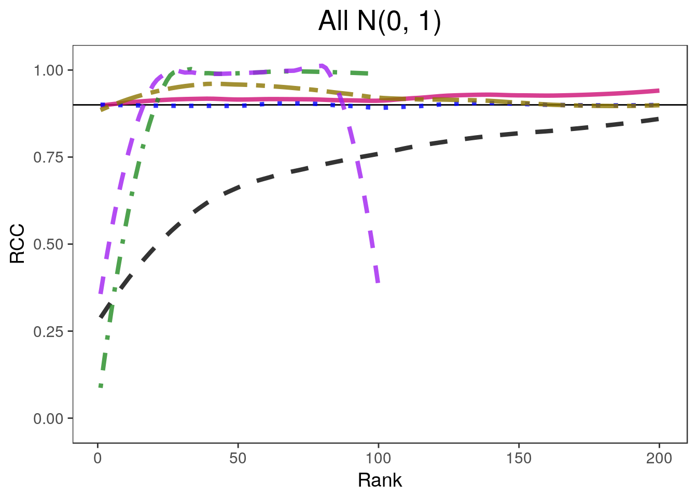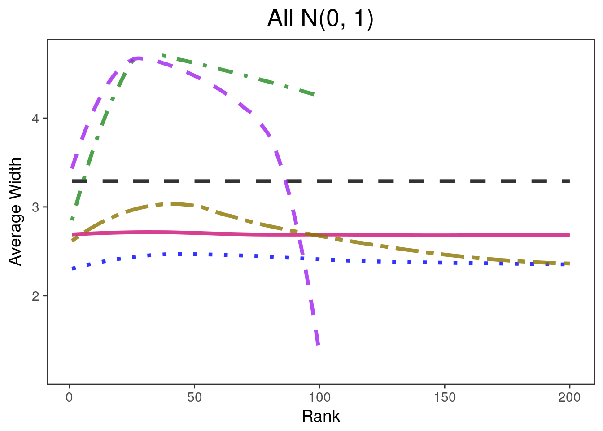
covplots[[3]]Warning: Removed 200 rows containing non-finite values (stat_smooth).Warning: Removed 1 rows containing missing values (geom_path).widthplots[[3]]Warning: Removed 208 rows containing missing values (geom_path). 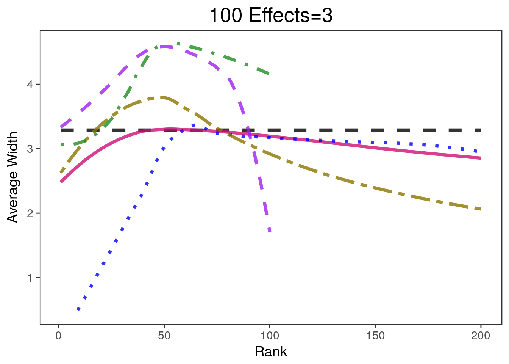
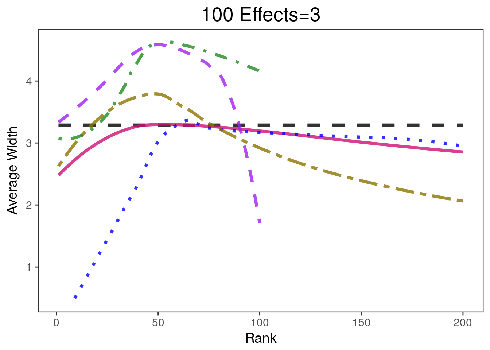
covplots[[4]]Warning: Removed 200 rows containing non-finite values (stat_smooth).widthplots[[4]]Warning: Removed 201 rows containing missing values (geom_path).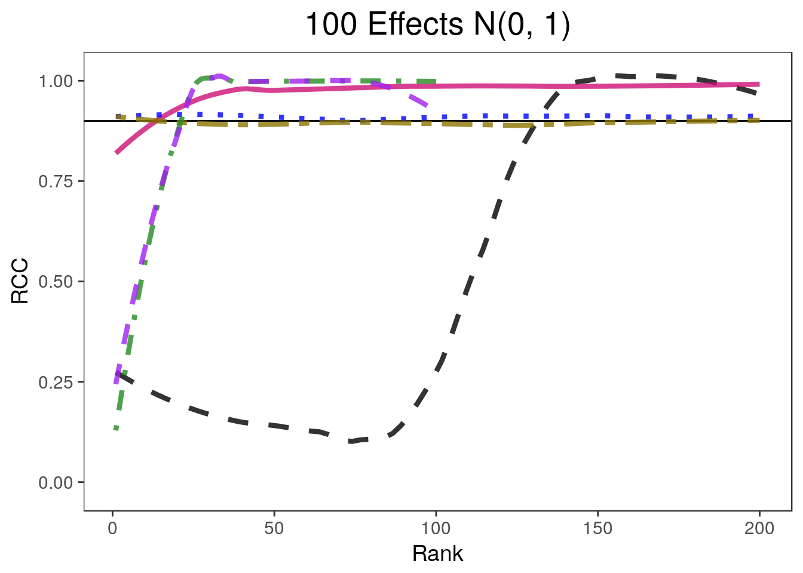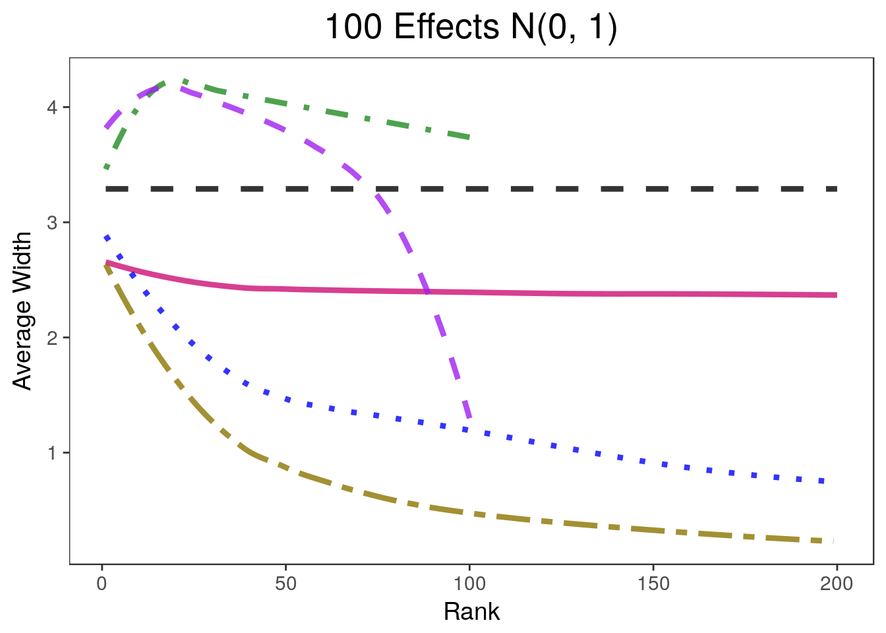
References
Session information
sessionInfo()R version 3.4.2 (2017-09-28)
Platform: x86_64-pc-linux-gnu (64-bit)
Running under: Ubuntu 17.10
Matrix products: default
BLAS: /usr/lib/x86_64-linux-gnu/blas/libblas.so.3.7.1
LAPACK: /usr/lib/x86_64-linux-gnu/lapack/liblapack.so.3.7.1
locale:
[1] LC_CTYPE=en_US.UTF-8 LC_NUMERIC=C
[3] LC_TIME=en_US.UTF-8 LC_COLLATE=en_US.UTF-8
[5] LC_MONETARY=en_US.UTF-8 LC_MESSAGES=en_US.UTF-8
[7] LC_PAPER=en_US.UTF-8 LC_NAME=C
[9] LC_ADDRESS=C LC_TELEPHONE=C
[11] LC_MEASUREMENT=en_US.UTF-8 LC_IDENTIFICATION=C
attached base packages:
[1] stats graphics grDevices utils datasets methods base
other attached packages:
[1] ashr_2.2-7 selectiveInference_1.2.4
[3] survival_2.41-3 intervals_0.15.1
[5] glmnet_2.0-16 foreach_1.4.4
[7] Matrix_1.2-11 rccSims_0.1.0
[9] rcc_1.0.0 ggplot2_2.2.1
loaded via a namespace (and not attached):
[1] Rcpp_0.12.16 compiler_3.4.2 pillar_1.2.1
[4] git2r_0.21.0 plyr_1.8.4 workflowr_1.0.1
[7] R.methodsS3_1.7.1 R.utils_2.6.0 iterators_1.0.9
[10] tools_3.4.2 digest_0.6.15 evaluate_0.10.1
[13] tibble_1.4.2 gtable_0.2.0 lattice_0.20-35
[16] rlang_0.2.0 parallel_3.4.2 yaml_2.1.18
[19] stringr_1.3.0 knitr_1.20 tidyselect_0.2.4
[22] rprojroot_1.3-2 grid_3.4.2 glue_1.2.0
[25] rmarkdown_1.9 purrr_0.2.4 tidyr_0.8.0
[28] magrittr_1.5 whisker_0.3-2 splines_3.4.2
[31] backports_1.1.2 scales_0.5.0 codetools_0.2-15
[34] htmltools_0.3.6 MASS_7.3-47 assertthat_0.2.0
[37] colorspace_1.3-2 labeling_0.3 stringi_1.1.7
[40] pscl_1.5.2 lazyeval_0.2.1 munsell_0.4.3
[43] doParallel_1.0.11 truncnorm_1.0-8 SQUAREM_2017.10-1
[46] R.oo_1.21.0 Benjamini, Yoav, and Daniel Yekutieli. 2005. “False Discovery Rate–Adjusted Multiple Confidence Intervals for Selected Parameters.” Journal of the American Statistical Association 100 (469). Taylor & Francis: 71–81. doi:10.1198/016214504000001907.
Reid, Stephen, Jonathon Taylor, and Robert Tibshirani. 2014. “Post selection point and interval estimation of signal sizes in Gaussian samples.” arXiv Preprint arXiv:1405.3340, May. http://arxiv.org/abs/1405.3340.
Stephens, Matthew. 2016. “False discovery rates: a new deal.” Biostatistics, October. doi:kxw041. doi: 10.1093/biostatistics/kxw041.
Weinstein, Asaf, William Fithian, and Yoav Benjamini. 2013. “Selection Adjusted Confidence Intervals With More Power to Determine the Sign.” Journal of the American Statistical Association 108 (501). Taylor & Francis Group: 165–76. doi:10.1080/01621459.2012.737740.
This reproducible R Markdown analysis was created with workflowr 1.0.1